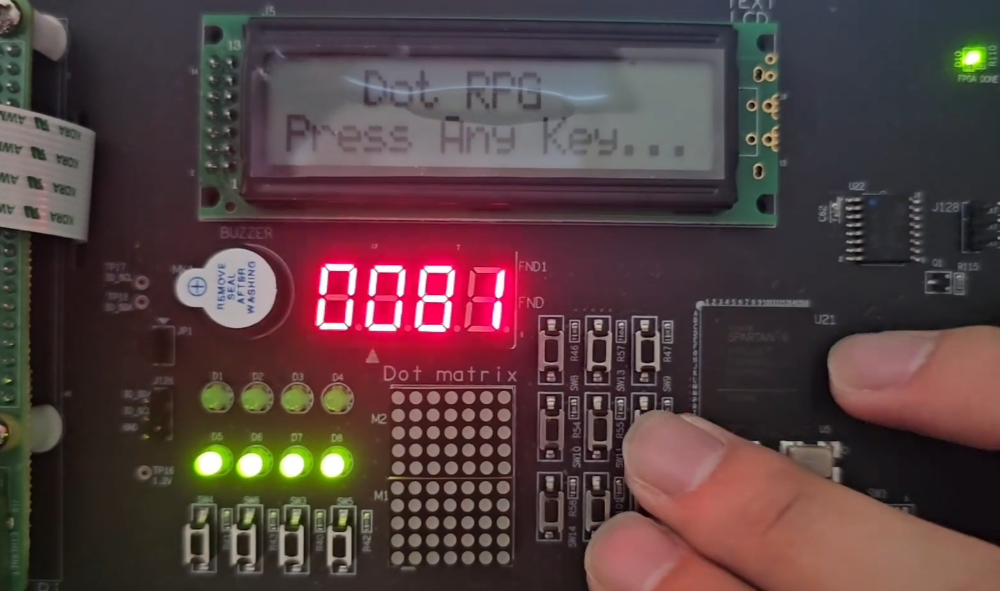

Dot Challenge
개발기간 : 2025.06 ~ 2025.07 (약 1개월)
개발인원 : 3명 (H/W, S/W, Documentation)
개발환경 : Archro-EM kit
사용기술 : C · Arduino

프로젝트 소개
Arduino 기반의 임베디드 프로젝트로, Archro-EM kit를 활용하여
제작한 하드웨어 챌린지 장치입니다.
H/W, S/W, Documentation 역할로 팀을 나누어
약 1개월간 협업을 통해 완성하였습니다.
주요 기능
· Archro-EM kit Dot Matrix를 활용한 디스플레이 구현
· 멀티 쓰레드를 활용한 장애물 시스템 구현
· 보스전 패턴 및 전투 시스템 구현
· 미로 생성 및 함정 시스템 구현
담당 역할
· 멀티 쓰레드를 활용한 장애물 기능 구현
· 보스전 패턴 및 전투 시스템 구현
· 미로 생성 및 함정 시스템 구현